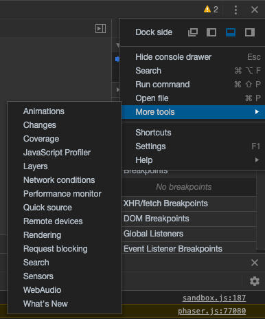
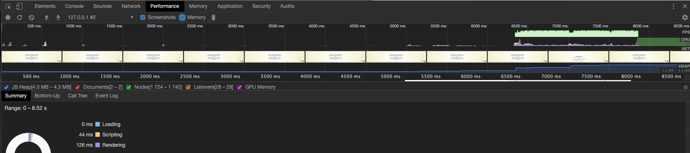
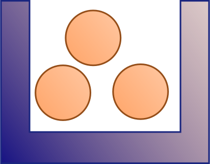
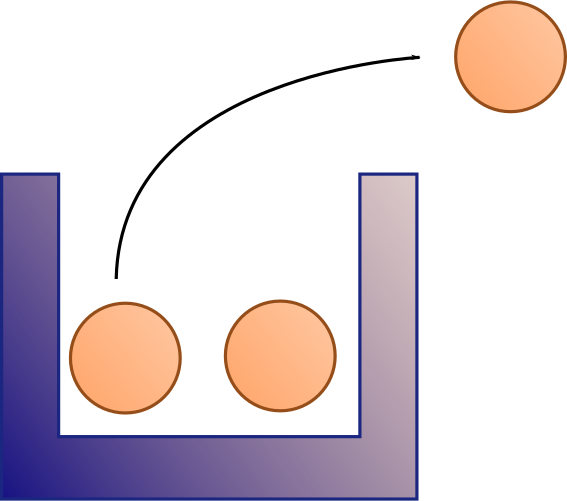
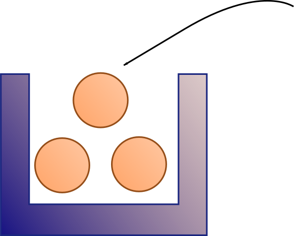

En general, cuantas más entidades gestione un juego, más deterioro del rendimiento
No es difícil degradar el rendimiento de un juego simplemente arrojando nuevas entidades a la escena. No es necesario ni modificarlas
El único factor que afecta al rendimiento es el tiempo de procesamiento entre frames
El problema es que el tiempo de procesamiento puede incrementarse de un sinfín de formas
La creación de entidades, su destrucción y el pintado de las mismas afecta al rendimiento porque crear, destruir y recorrer la lista de entidades a pintar toma tiempo
Si el tiempo entre frame y frame excede los 16.6 ms, el frame rate disminuirá por debajo de 60 fps
En la pestaña "Rendering", podemos activar la opción "Frame Rendering Stats" en Chrome

Figura 1: Si está oculta la pestaña, la podemos mostrar
Además, en la pestaña "Performance", podemos guardar una ejecución del programa y veremos qué funciones se ejecutan y cuánto tiempo tardan en hacerlo
Hacer profiling es fundamental para ver cuál es el impacto real (y no sólo en teoría) de las partes de nuestro código
En JavaScript apenas nos preocupamos por la vida de un objeto
Creamos el objeto con new y cuando no lo necesitamos más, sencillamente dejamos de usarlo
¿Qué pasa con los objetos que ya no se usan? La respuesta es que son recogidos por el recolector de basura y destruidos de forma que la memoria que ocupan queda disponible de nuevo
Para ver cómo funciona, activamos las opciones de desarrollo (en este caso, en Chrome), y en la pestaña "Performance" grabamos mientras ejecutamos un juego, activando la opción de "Memory"

Figura 2: Ventana de resultados de profiling en Chrome
El recolector de basura es conveniente porque nos evita tener que liberar la memoria manualmente, previniendo que un objeto sea destruido accidentalmente cuando aún tenemos que usarlo
Sin embargo, introduce un problema de impredecibilidad, dado que no sabemos ni cuándo sucederá ni cuánto tardará
Una recolección de basura especialmente larga puede tirar el rendimiento y nada garantiza que la siguiente recolección no haga lo mismo y suceda en menor tiempo del deseado
Una forma de controlar el efecto de la creación de objetos y evitar la recolección de basura es mediante el uso del patrón Object Pool o depósito de objetos
La idea es sencilla: primero crearemos un pool (depósito) de objetos estimando los que vayamos a utilizar durante el programa

Figura 3: Pool de objetos
Cuando necesitemos un objeto, en lugar de crearlo, se lo pediremos al pool y luego lo usaremos normalmente

Figura 4: Coger un objeto del pool
Una vez terminemos de usar el objeto, cuando ya no lo necesitemos, lo devolveremos al pool

Figura 5: Devolver el objeto al pool
Cuando necesitemos otro, volveremos a pedirlo al pool de objetos
A lo largo de la ejecución del programa, los depósitos de objetos pueden permanecer fijos o redimensionarse de acuerdo a las necesidades del mismo
Si creamos una entidad con new, como hacíamos con los sprites, el objeto morirá cuando lo hace cualquier otro objeto de JavaScript, es decir, cuando nada hace referencia a él
En general, al salir del scope
Pero si añadimos la entidad al juego, bien explícitamente o a través de los métodos factoría de add, esta se mantendrá viva mientras dure el juego
La manera en que podemos destruir una entidad, es decir, eliminar todas sus referencias de forma que el recolector de basura pueda llevársela es mediante el método destroy() de la entidad
Por ejemplo, el siguiente ejemplo muestra un máximo de 10 sprites en pantalla destruyendo la entidad más vieja cuando excedemos el máximo
preload () {
this.load.setBaseURL('https://labs.phaser.io/assets/');
this.load.image('phaser', 'sprites/phaser-dude.png');
}
update(time, delta) {
let x = Math.random() * 300;
let y = Math.random() * 300;
this.add.sprite(x, y, 'phaser');
if (this.children.length > 10) {
this.children.getChildren()[0].destroy();
console.log('World children count:',
this.children.length);
}
}
Como veremos en breve, a veces nos interesará no destruir la entidad pero sí dejarla inerte, de forma que no se actualice, ni se pinte, ni interactúe con nada hasta que vuelva a interesarnos
Phaser considera que una entidad "muerta"/"killed" ha dejado de existir y pone su atributo active a false
Aunque la nomenclatura resulte confusa, que una entidad "no esté activa" no significa que haya sido destruida
Significa que, para Phaser, esta entidad no participará en las fases de actualización y pintado
Para devolver una entidad a la existencia, según Phaser, usamos setActive(true) y setVisible(true)
Como ocurre con todas las entidades de Phaser, un grupo puede albergar otras entidades pero además, los grupos exponen una API especialmente diseñada para la búsqueda, ordenamiento y manipulación en grupo de las entidades que contiene
Un grupo es parecido a un contenedor: creamos entidades y las añadimos al grupo
let martian = new Martian(); // 'Martian' es un 'Sprite'
let enemies = scene.add.group();
enemies.add(martian);
Aquí comentamos algunas funciones ilustrativas. Podéis usar, del API, las que más sentido tengan, sean éstas o no
Phaser nos da acceso a todas las entidades de un grupo:
update() {
// Recorremos un grupo
this.enemies.children.iterate(item => {
item.x ++;
});
}
Además, nos permite preguntar al grupo ciertas cosas:
let e = new Martian("m");
let enemies = scene.add.group();
enemies.add(e);
let yesNo = enemies.contains(e); // si el grupo contiene una entidad
let d = enemies.countActive(false); // el número de "muertos"
enemies.remove(e); // quitamos un elemento del grupo
En los grupos (Group) podemos matar una entidad usando el método kill(gameObject) o killAndHide(gameObject)
Al crear un grupo podemos utilizar el método getFirstAlive() que es propio de los grupos y devuelve la primera entidad cuya propiedad active sea true
Este otro ejemplo mata los sprites más viejos pero no los destruye
El efecto es parecido, pero no igual, puesto que los objetos siguen existiendo y la cantidad de memoria consumida se mantiene en aumento
create() {
this.group = this.add.group();
}
update(time, delta) {
let x = Math.random() * 400;
let y = Math.random() * 400;
this.group.add(this.add.sprite(x, y, 'phaser'));
if (this.children.length > 10) {
let ch = this.group.getFirstAlive();
this.group.killAndHide(ch);
// también con: ch.setActive(false); ch.setVisible(false);
console.log('World children count:', this.children.length);
}
}
Si observamos la consola:
Phaser no incluye pools directamente pero podemos utilizar nuestra propia clase Pool que utilice grupos internamente para ello
El constructor de Pool recibe el juego en scene, añade un grupo al juego con add.group() y guarda ese grupo internamente
También recibe la lista de entidades que se van a reciclar:
// En la pestaña create, antes de la función create()
class Pool {
constructor (scene, entities) {
this._group = scene.add.group();
this._group.addMultiple(entities);
this._group.children.iterate(c => {
c.setActive(false);
c.setVisible(false);
});
}
Recuperamos una entidad del pool utilizando el método spawn() que recibe las nuevas coordenadas del sprite x e y,
// A continuación del constructor
spawn (x, y) {
let entity = this._group.getFirstDead();
if (entity) {
entity.x = x;
entity.y = y;
entity.setActive(true);
entity.setVisible(true);
}
return entity;
}
Devolver una entidad requiere llamar a los método setActive(false) y setVisible(false) sobre esa entidad
// Estamos en la escena
let c = this.pool.spawn(x,y);
// ...
// Supón que no necesitamos más c
c.setActive(false);
c.setVisible(false);
O podemos añadir un método para pedir al pool que libere una entidad
// A continuación del spawn
release (entity) {
this._group.killAndHide(entity);
}
Podéis encontrar un ejemplo completo que usa pooling en el siguiente enlace: